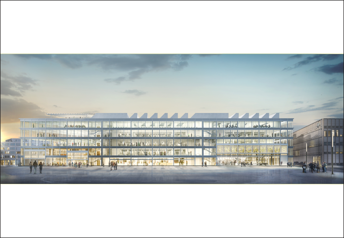
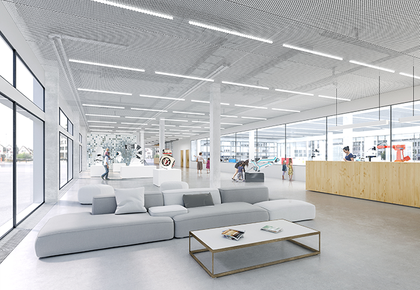
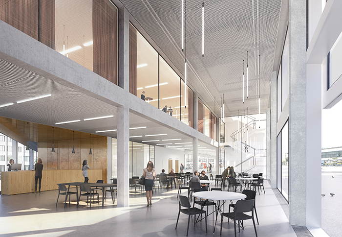
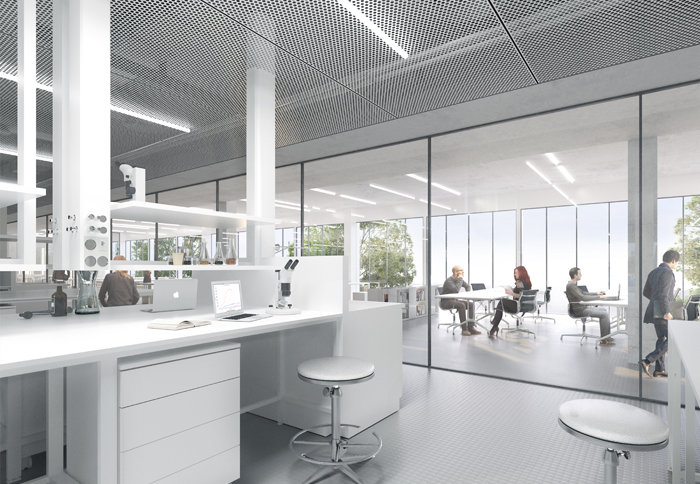
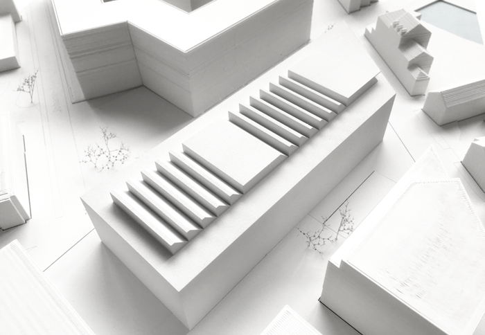
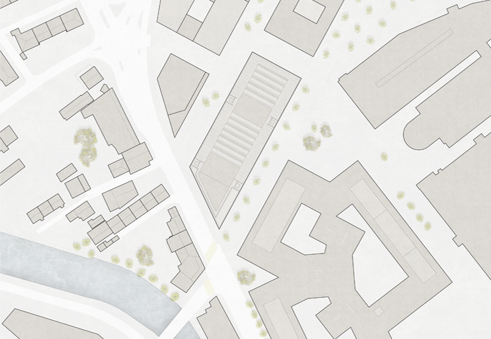
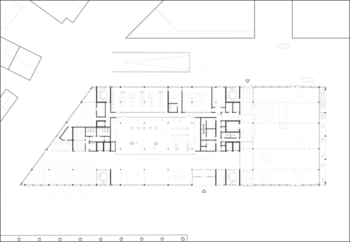
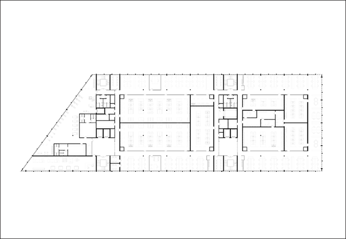
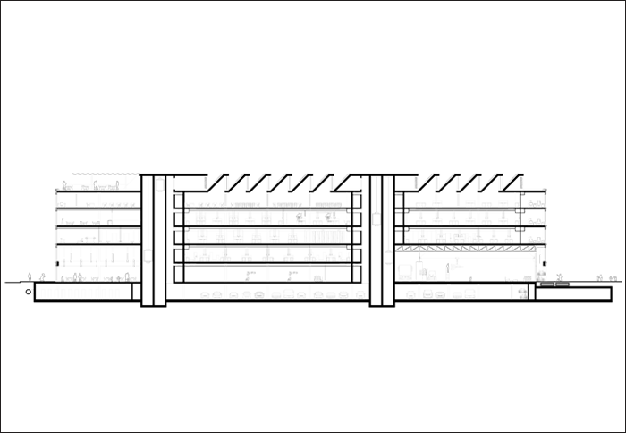

Projet: INNOCAMPUS BIENNE, 3ème prix









Projet: INNOCAMPUS BIENNE, 3ème prix
Lieu: Bienne (BE)
Client: Switzerland Innovationspark Biel/Bienne, Innocampus AG, Nidau-Biel
Programme: Laboratoires, buros, halles de production, auditoire, café
Budget: 38’000’000 CHF
Date: 2016
Type: Concours ouvert, 3ème prix
Team: NYX architectes, Basler Hoffmann AG Zürich (ingénieurs civils), TPAG AG, Biel (technique du bâtiment), Prona AG, Biel (énergie), ARO Plan AG, Oberägeri (spécialistes laboratoires)
Images: Play-Time